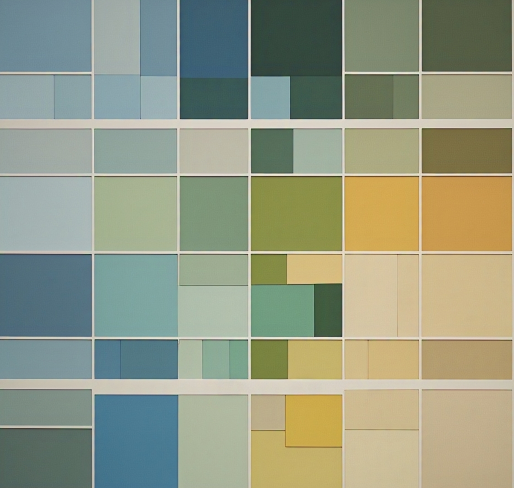

MUITO PRAZER, ESSE É O FOTOGRAFIIA.
O Fotografiia é uma janela para a alma do mundo. Conversamos através das imagens, capturando sensações e sentimentos que nos conectam à essência da vida. Aprofunde-se nesse universo visual, permita-se ser transportado por momentos e emoções, e descubra o que nos faz ser quem somos. Vamos além, juntos, e explore o infinito potencial do Fotografiia
MEUS VÍDEOS.
Essência Visual I
Fragmentos de luz e movimento.
Essência Visual II
A arte da narrativa em alta definição.
Essência Visual III
Explorações estéticas e composições.
Essência Visual IV
O tempo capturado em detalhes.
Essência Visual V
Produção final e visão artística.


1 / 31